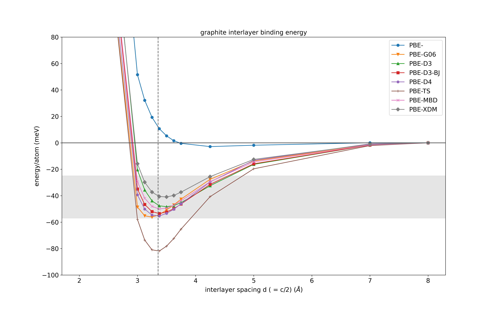

石墨层间结合能
在这里，我们将探讨将石墨烯片层结合在一起形成石墨的范德华相互作用。我们将看到，标准的半局域密度泛函近似无法正确预测石墨中层间结合能，而通过在CASTEP中使用半经验色散修正，我们可以获得更准确的结果。
在本教程中，我们将使用 CASTEP-ASE 接口来设置和运行多个简短的计算，并分析结果，当然，你也可以根据自己的需要将此处的内容调整为使用任意脚本语言。我已将脚本的部分内容拆分，以便在某些地方增加说明，但你可以下载包含所有单元格的 Jupyter Notebook 文件。 这里.
我们首先导入几个 Python 库。有关如何使用原子模拟环境（ASE）与 CASTEP 配合的更多信息，请参见 此处的文档.
# ASE version 3.23
from ase.io import read, write
from ase.calculators.castep import Castep
from ase.io.castep import read_seed
from ase.visualize import view
# pandas version 1.3.4
import pandas as pd
# castep.mpi on path already, version 24.1
castep_cmd = 'mpirun -n 4 castep.mpi'
# plotting
from matplotlib import pyplot as plt
%matplotlib inline
# Python version: 3.9.5
CASTEP-ASE 接口从 .castep 文件中返回‘最终能量’，不过在本教程中我们实际上需要的是包含散射修正的能量。下面的函数读取 .castep 文件并提取经过散射修正后的最终能量。
def extract_dispersion_corrected_energy(file_path):
"""
Extracts the dispersion corrected final energy from a .castep file.
Parameters:
file_path (str): Path to the .castep file.
Returns:
float: The extracted energy value in eV.
"""
energy = None
with open(file_path, 'r') as file:
lines = file.readlines()
# Iterate over the lines in reverse order to find the last occurrence
for line in reversed(lines):
if "Dispersion corrected final energy" in line:
energy = float(line.split()[-2])
break
if energy is None:
raise ValueError("Energy not found in the file.")
return energy
在本教程中，我将使用 CASTEP 24.1 版本。见 这里 不同色散修正方案的列表以及它们在哪个版本的CASTEP中可用。
层间分离：设置并运行计算
下面的脚本循环遍历几种不同的色散修正方案，并针对每种方案计算一个含4个原子的石墨单元在不同c晶格常数下的总能量。这实际上会增大石墨烯层之间的间距。通过将各层分开足够远的距离，我们可以估算出每种方法预测的层间结合能。
该脚本在一台相对强大的笔记本电脑上使用4个核心运行约需10分钟。你可以降低k点采样或基组精度，或者减少方法或c参数的循环次数以加快计算速度。
# run in this directory
directory = 'separate-layers-tutorial/'
# k-point grid -- not converged!
kpts = [13,13,5]
# xc functional to use
xc = 'PBE'
# range of unit c parameters in Angstroms (interlayer spacings are half these!)
crange = [4, 5, 6, 6.25, 6.5, 6.75, 7, 7.25, 7.5, 8.5, 10, 14, 16]
#SEDC correction schemes to try:
schemes = ['', 'G06', 'D3', 'D3-BJ', 'D4', 'TS', 'MBD', 'XDM']
# pandas dataframe to store the results
df = pd.DataFrame({'crange' : crange})
# loop over the different correction schemes
for sedc_scheme in schemes:
print('\n',50*'=')
print(f'{xc} + {sedc_scheme}\n')
# list to temporarily hold the total energy for each calculation
energies = []
# loop over c parameters:
for c in crange:
label = f'{xc}-{sedc_scheme}-{c:3.2f}'
try:
graphite = read_seed(directory+label)
except:
# if the calculation doesn't already exist, we set it up and
# run it
# read in cif file (taken from here: https://materialsproject.org/materials/mp-48 )
graphite = read('C_mp-48_primitive.cif')
# For CASTEP < 24.1 we might need a supercell to get more accurate results
# for TS, MBD and XDM schemes that rely on Hirshfeld charges.
# graphite = graphite * (3,3,1)
# scale c parameter to new value
cellpar = graphite.cell.cellpar()
cellpar[2] = c
graphite.set_cell(cellpar, scale_atoms=True)
# set up castep calculator
calc = Castep(
kpts = kpts,
label = label,
castep_command = castep_cmd,
directory = directory,
_rename_existing_dir = False, # allows us to write all these calculations to the same directory...
)
calc.param.xc_functional = xc
calc.param.basis_precision = 'precise' # switch to something cheaper (e.g. FINE) to speed things up for this example..
calc.param.write_checkpoint = 'None' # don't need the checkpoint files now
calc.param.write_cst_esp = False # don't need the electrostatic potential file now
calc.param.write_bands = False # don't need the bands file now
calc.cell.symmetry_generate = True # use symmetry to speed up the calculation
calc.cell.snap_to_symmetry = True # enforce symmetry
# Switch on the SEDC flags
if sedc_scheme != '':
calc.param.sedc_apply = True
calc.param.sedc_scheme = sedc_scheme
# For the XDM scheme we need to set this manually
# otherwise the calculation crashes...
if sedc_scheme == 'XDM':
calc.param.SEDC_SC_XDM = 1.0
graphite.calc = calc
e = graphite.get_potential_energy()
# If a SEDC scheme is used,
# we need to extract the dispersion corrected energy
if sedc_scheme != '':
e = extract_dispersion_corrected_energy(directory+label+'.castep')
energies.append(e)
print(f'{c:8.3f} A\t {e:12.8f} eV')
# save the energy wrt to furthest energy:
energies = [e - energies[-1] for e in energies]
df[f'{xc}-{sedc_scheme}'] =energies
# Save to a .csv file:
df.to_csv('graphite_layer_separation.csv')
生成的.param文件看起来类似如下：
WRITE_CST_ESP: FALSE
WRITE_BANDS: FALSE
WRITE_CHECKPOINT: None
XC_FUNCTIONAL: PBE
SEDC_APPLY: TRUE
SEDC_SCHEME: D3 # or TS or D3-BJ etc.
BASIS_PRECISION: precise
该任务默认为 SINGLEPOINT （这正是我们在此情况下所希望的）。
.cell 文件只是将晶胞在 c 方向缩放后的晶体结构。
读入并分析结果
我们现在可以读取并分析上一步的结果。将数据读入一个 pandas 数据框对象很方便。
df = pd.read_csv('./graphite_layer_separation.csv')
# scale by 1000 / 4 to get the energies per atom and in units of meV
dfdiff = (df.iloc[:,1:]) * 1000 / 4 # energy per atom in meV
# the c parmeter is 2x the interlayer spacing, d
dfdiff['c/2'] = df['crange'] / 2
styles = [f'{m}-' for m in ["o","v","^","s", "H", "+","x","D"]]
# compared to this reference (and many others!) https://doi.org/10.1039/C3RA47187J
ax = dfdiff.plot(x='c/2', y=['PBE-','PBE-G06', 'PBE-D3', 'PBE-D3-BJ', 'D4', 'PBE-TS', 'PBE-MBD', 'PBE-XDM'],
ylabel='energy/atom (meV)',
ylim=(-100, 80),
xlabel=r'interlayer spacing d ( = c/2) (${\AA}$)',
figsize = (16,10),
style=styles,
)
ax.axhline(0, color='0.3')
ax.axvline(3.355, ls='--', color='0.4')
# Experimental binding energies reported shown in the figure are 31 ± 2, 43, 52 ± 5 and 35 (+15 to –10) meV per atom
ax.axhspan(ymin=-57, ymax=-25, color='0.8', alpha=0.5)
ax.set_title('graphite interlayer binding energy')
plt.savefig('graphite-interlayer-binding-castep-dispersions.pdf')
plt.savefig('graphite-interlayer-binding-castep-dispersions.png', dpi=300)
从而产生如下图形：

我们可以看到，普通的PBE泛函严重低估了石墨的结合能，而许多包含色散修正的结果则具有更好的一致性。TS方案对石墨的结合过强，但已被发现适用于其他类型的体系。当遇到新体系时，始终需要仔细测试此类方法。
进一步建议
-
对于 D3 和 D3-BJ 方法，尝试通过设置以下参数来开启三体相互作用项：
在.param 文件中。这会对石墨的层间结合能产生什么影响？（你也可以考虑设置
IPRINT = 2以查看有关色散修正参数的更多信息。) -
与带有和不带色散修正的其他交换关联泛函相比（尽管需要注意的是，这些修正中） 仅针对少数泛函进行了参数化.)
-
对于 CASTEP < 24.1，TS、MBD 和 XDM 方案会有关于晶胞过小导致色散修正不准确的警告。如果出现此警告，请尝试对这三种方法重复上述计算，使用更大的超胞以观察其影响，并确定需要多大的超胞才能使色散修正收敛。